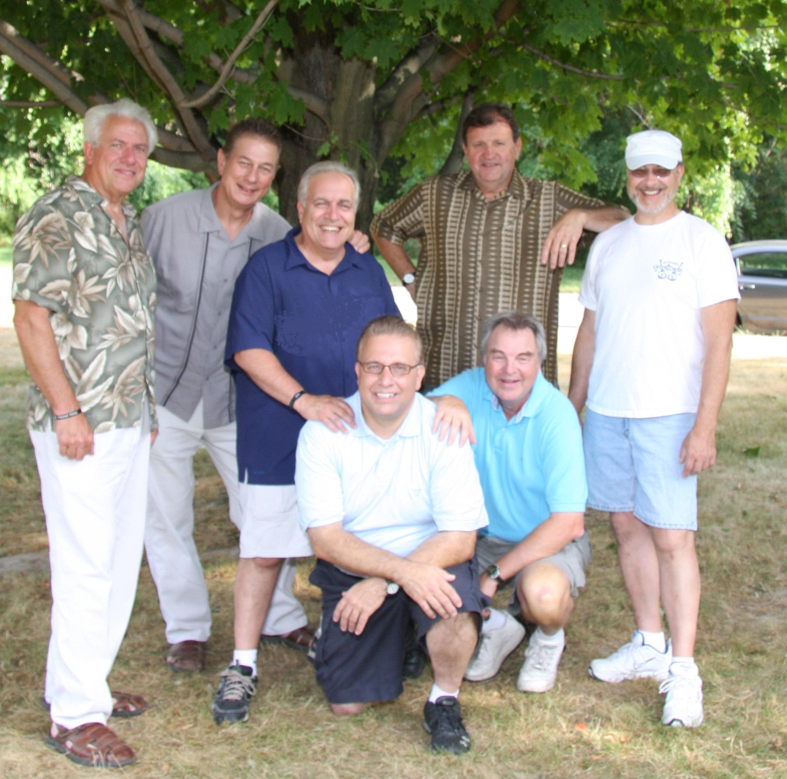
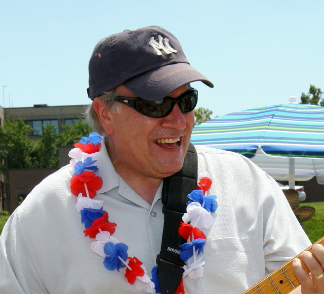
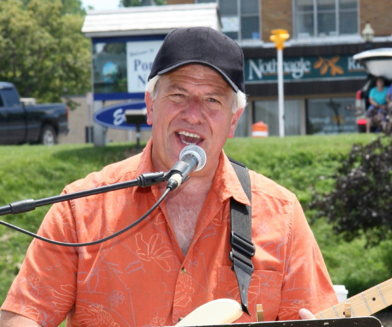
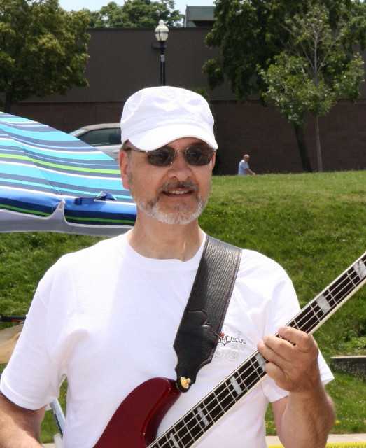
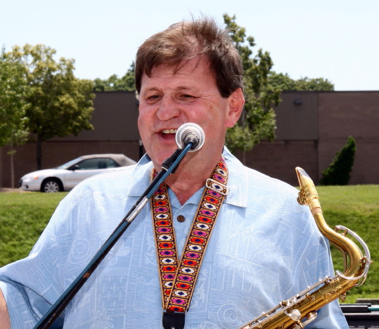
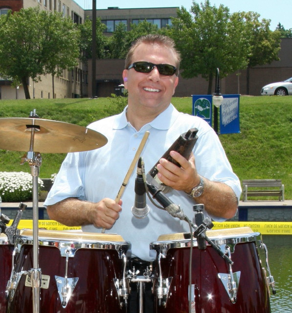
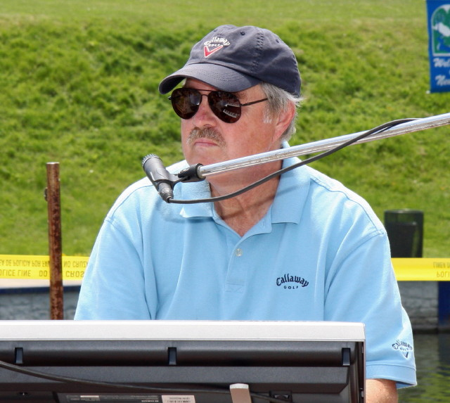

Welcome to the website for Main Street East, a rock & roll band based out of Rochester, NY.
Main Street East, Rochester's premier interactive band, will move your feet, make you laugh and
leave you begging for more! This 7-piece classic/platinum rock band works the crowd, playing favorites
from the 60s through the 80s, including hits by Bruce Springsteen, Joe Cocker, Bob Segar, The Beatles,
Huey Lewis, The Young Rascals, Neil Diamond and more. Audiences love Main Street East's tight, hard-driving
back-beat. Throw in MSE's sidesplitting banter, fans playing tamborines and maracas on stage, and you've got
a rockin' good time!
With a fantastic sound, a familiar song lineup and a witty crew, Main Street East is one of the best
interactive party bands around!
| When |
What |
Where |
| 5/15/2014 |
Festival |
Some place |
-

Born and raised on Rochester's northeast side.
He attended Bishop Kearney High School and St. John Fisher College.
He has been in music and entertainment most of his life, playing guitar and
singing in his first group "The Electras," in 7th grade and the group "Bus Stop"
throughout his high school years. After high school, Doug played the coffeehouse
circuit, country and folk rock, and even a little disco! In the mid 80's, Doug
became the DJ host at a local night club. In the 90's Doug and a few of his musician
friends got together to form a band and are still playing today as "Main Street East!"
Doug met his wife, Patty, in high school and today they live in Webster.
They have four wonderful children and four beautiful grandchildren.
-

Bob the cop Schreiber is a Webster native who, at the age of 13,
was inspired to learn guitar by the music of the Beatles.
He played in several garage bands throughout his early teen years and attended Bishop
Kearney High School.
There, he became the lead guitarist for The Wee Four, a popular 60's band of BK students.
While at BK, Bob met Pooch, Marty, and their group, The Electras, which transformed into The Bus Stop.
Bob went on to Monroe Community College for Criminal Justice followed by 26-years as a Police Officer,
getting married in 1979, raising a family, and playing guitar at home.
Bob retired from CSI and now works as a local real estate broker for Re/Max Advance.
He and his Fabulous wife, Dawn, have a little Ponderosa in West Walworth, four Fabulous daughters,
and two Fabulous grandchildren. In 1997 Bob got a surprise invitation from Pooch and Friends,
a very talented group of musicians ...... and amazingly today .... Bob, Doug, and Marty ...
together again and still rock'n 40-years later .... with "Main Street East!"
-
Marty "Stonewall" Strenczewilk

Born and raised in the Rochester, NY suburb of Irondequoit.
He attended Eastridge High School and Monroe Community College.
He started in music playing bass and singing in his first group "The Electras,"
in 7th grade and with the group "Bus Stop" throughout high school.
After high school, Marty played some folk rock with Doug on the coffeehouse circuit.
In the late 70's & early 80's he played guitar and sang with Christian group
"Rise Up & Walk." He joined "Main Street East!" about 8 years ago and was
reunited with Doug and Bob.
Marty lives in Hilton with his Fabulous wife Kathy and has 3 great kids and 2 gorgeous granddaughters.
-

Born in the little-known hamlet of North Collins, New York, south of Buffalo,
Mike quickly rose to prominence in the fields of sales, electronics and music.
He has played for many established rock and show groups in the Rochester area,
most notably with the "Mutual Fund" in 1971, 1973, 1977, and an extended run between
November of 1978 and February 1979. Mike plays bass, guitar, alto and tenor saxophones,
keyboards, and plays with church bands on Sunday mornings. He has performed in numerous
show pit bands, including "Jesus Christ Superstar," and "Godspell."
-
Joe "Monaconga" Monachino

Joe lives in Webster, New York.
He attended Bishop Kearney High School and graduated
from Rochester Institute of Technology. He started playing
percussion while he was still in diapers, banging on anything that made noise.
He was trained by a prominent music artist starting at an adolescent age.
He played in marching bands and in the seventies started to play in various groups
including the band Triple Play. Monaconga enjoys eating, listens to way too much
Barry Manilow, and wears unbelievable amounts of 1960's aftershave.
Joe spends his time working as Manager for a world-wide food company and
in his spare time supports his town as an officer.
He has two beautiful daughters, an amazing son-in-law, and a gorgeous first grand-daughter
born in December, 2013.
He plays congas and full-range percussion with "Main Street East!"
-

A lifetime Rochester resident.
He has played with p.s. #52's Hollywood Mufflers, East High School's Dynamics -
one of the first high school dance bands in Monroe County - the big band, Stardusters,
and popular show groups, Mutual Fund and Mantessa. He is a graduate of the Eastman School
of Music and has played before two presidents, one dictator, the Buffalo Bills, and Harry Belafonte.
With a varied musical background, Scott has been a church organist, a classical piano performer,
played saxophone in Cornell's Big Red marching band, attended the Naval Music Academy, led the
384^th and 98^th Division Army dance bands, played taps at Arlington National Cemetery, shared a
joke with Jimmy Smith, played one serendipitous night with Cold Blood, and is the only current
member of the "Main Street East!" to have hit a grand slam off Bill "Spaceman" Lee.
-
Joe Stramonine has been active in music for over 40 years and has performed in
multiple genres in that span. Joe started as many do, playing in bands through high
school with his neighborhood schoolmates. His first band was called the Generation Gap
and lasted about 4 years, then in the 70's and early 80's Joe and his wife played in a
top 40 band called Evolushun and then a harder hitting rock group Fortune.
Fast forwarding to 1983 he and his wife Lee formed the country group Shortbread which
performed in several venues around the Rochester area and opened for some national acts
such as Lionel Cartwright and others popular at the time. The married duo then pursued
a national career and produced an album in Nashville that yielded 2 national releases
one of which reached #7 on the independent country national charts. They also performed
for 2 years in a row at the well known Nashville music festival Fan Fair and also appeared
on the Nashville Network multiple times. Shortbread ended in 1995 and Joe put music down
for awhile to enjoy more home and family interests. From 1996 to 2000 Joe picked it back
up again and performed with several groups which included playing drums and singing for
Private Drive and Centre Stage, then became lead singer for Orient Express and even did a
stint as front man for the Legendary Dukes. All this must have rubbed off a little as Joe's
son Cory grabbed the baton and is currently front man for the popular local group Guy Smiley.
Joe and Lee still enjoy performing together for special events but Joe feels very fortunate to
have been chosen to perform with Main Street East and is looking forward to the coming year and
beyond with this fine group of musicians.